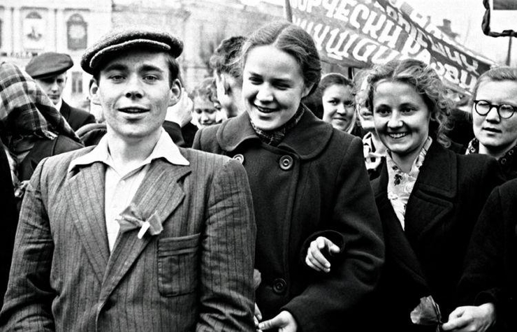
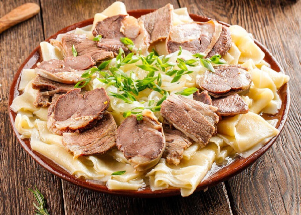
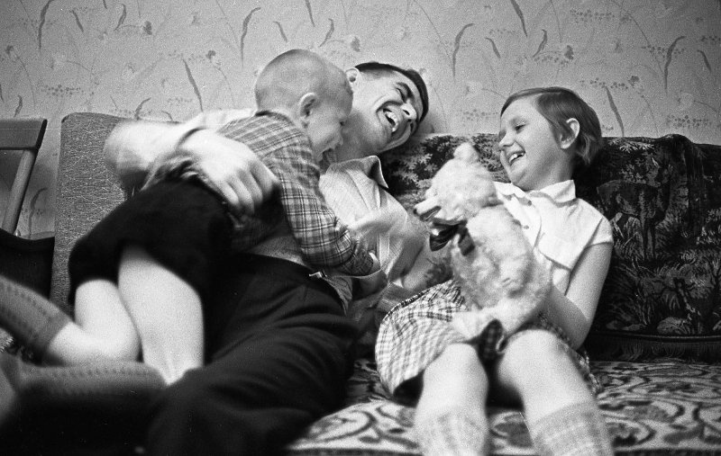
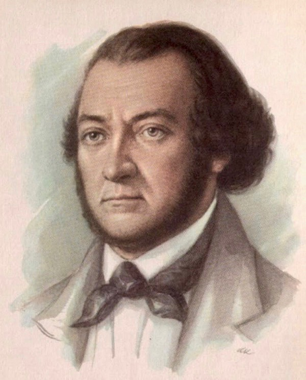
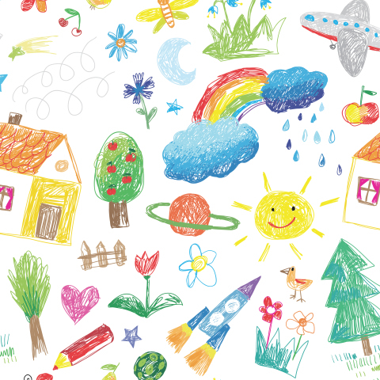

Сергей Чернышов



Праздничный бишбармак, по казахски бесбармак. Астраханский вариант с картошкой.






Мы будем жить и процветать! Над клумбой бабочки порхают, И небо льётся синевой. В тени песочницы играют
